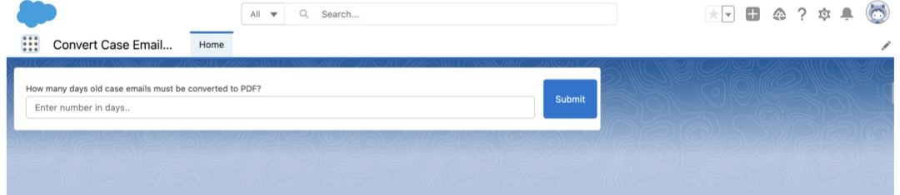
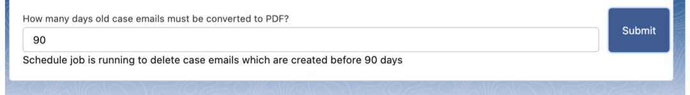

A step-by-step guide to scheduling the batch job, converting emails for a single case, and managing the job from the Salesforce UI — so you can free up data storage without losing any email history.
The storage problem every Salesforce org faces — and how this app solves it.
Storage in Salesforce is split into Data Storage and File Storage. Case email messages make up a large share of data storage, and regulations often require organisations to retain them for years — meaning storage needs only grow over time.
Convert Case Emails to PDF converts the email messages on your cases into compact PDFs and attaches them back to the case record, freeing up data storage while keeping every communication accessible inside Salesforce — no external tools required.
Run this once to have case emails converted to PDF automatically, every hour.
Click the App Launcher (▦▦▦), then search for and select 'Convert Case Email Messages'.

Enter the number of days in the text box and click Submit.

This scheduled job runs every hour in your org, converting case emails to PDF and deleting the original email messages based on the number of days entered. A total of 10 batches are processed on every run.
On the same page, use the 'Please provide case number if you wish to convert emails of that particular case to PDF' field to convert just one case on demand.
Stop the scheduled job at any time from Setup.
What works well and what to know before installing.
Install for free from the Salesforce AppExchange. No payment, no trial period — fully featured from day one.